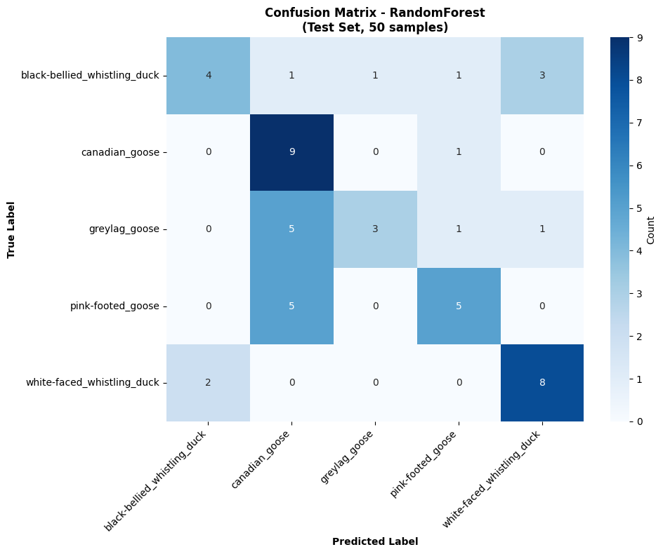
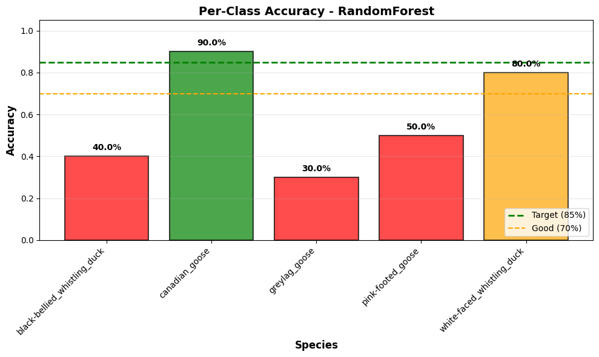

Evaluasi#
5.1 Metrik Evaluasi#
Metrik yang digunakan untuk menilai kinerja model:
Accuracy ≥ 85%
Mengukur proporsi prediksi yang benar terhadap seluruh data uji.Classification Report
Precision : ketepatan prediksi model
Recall : kemampuan model mengenali kelas yang benar
F1-score per kelas ≥ 80% digunakan sebagai metrik utama karena menyeimbangkan precision dan recall.
Confusion Matrix
Melihat distribusi prediksi benar dan salah
Mengidentifikasi pasangan kelas yang sering tertukar
Menganalisis pola kesalahan klasifikasi antar spesies
1. Import Library#
import joblib
import numpy as np
from sklearn.metrics import accuracy_score, f1_score, classification_report, confusion_matrix
import matplotlib.pyplot as plt
import seaborn as sns
from collections import Counter
Load Model Terbaik dan LabelEncoder#
# Load best model yang sudah di-save dari modeling.ipynb
# PENTING: Gunakan model yang EXACT dari modeling, bukan load ulang
# Model terbaik dari modeling.ipynb adalah yang memiliki F1-score tertinggi di validation set
import os
models_path = "models"
# Cari model terbaik yang tersimpan
available_models = [f for f in os.listdir(models_path) if '_best_model.pkl' in f]
print(f"Available models: {available_models}")
# Load model terbaik (default: RandomForest karena hasil modeling menunjukkan RF sebagai yang terbaik)
best_model_file = os.path.join(models_path, "randomforest_best_model.pkl")
if os.path.exists(best_model_file):
best_model = joblib.load(best_model_file)
best_name = "RandomForest"
print(f"✓ Loaded: {best_name} from {best_model_file}")
else:
# Fallback: gunakan model apapun yang tersedia
if available_models:
best_model_file = os.path.join(models_path, available_models[0])
best_model = joblib.load(best_model_file)
best_name = available_models[0].replace('_best_model.pkl', '').title()
print(f"⚠️ {best_model_file} tidak ditemukan, menggunakan: {best_name}")
else:
raise FileNotFoundError(f"No model files found in {models_path}")
Available models: ['knn_best_model.pkl', 'randomforest_best_model.pkl']
✓ Loaded: RandomForest from models\randomforest_best_model.pkl
Load Test Data & Feature Selection Indices#
X_test_scaled = np.load("data/processed/X_test_scaled.npy")
y_test_str = np.load("data/processed/y_test.npy") # NOTE: Contains STRING labels, not numeric!
# Load LabelEncoder
le = joblib.load("models/label_encoder.pkl")
# PENTING: Gunakan EXACT feature indices dari modeling.ipynb
# Dari feature selection cell di modeling.ipynb
# selected_features = ['mfcc1', 'mfcc2', 'mfcc4', 'mfcc6', 'mfcc7', 'mfcc8', 'mfcc9', 'mfcc10', 'mfcc11', 'mfcc13', 'zcr', 'rms', 'centroid']
# selected_idx = [0, 1, 3, 5, 6, 7, 8, 9, 10, 12, 13, 14, 15]
# Try to load from file, fallback to hard-coded values
try:
selected_idx = np.load("models/selected_feature_indices.npy")
print("✓ Loaded selected_idx from models/selected_feature_indices.npy")
except FileNotFoundError:
print("⚠️ models/selected_feature_indices.npy not found, using hard-coded indices")
selected_idx = np.array([0, 1, 3, 5, 6, 7, 8, 9, 10, 12, 13, 14, 15])
# Pilih hanya fitur yang sama seperti saat training
X_test_sel = X_test_scaled[:, selected_idx]
print(f"\nX_test_scaled shape: {X_test_scaled.shape}")
print(f"X_test_sel (selected) shape: {X_test_sel.shape}")
print(f"Selected feature indices: {selected_idx}")
print(f"y_test_str shape: {y_test_str.shape}")
print(f"y_test_str dtype: {y_test_str.dtype}")
# ===== VALIDASI CONSISTENCY =====
print("\n=== VALIDASI CONSISTENCY ===")
assert X_test_sel.shape == (50, 13), f"❌ X_test_sel shape error! Expected (50, 13), got {X_test_sel.shape}"
assert len(selected_idx) == 13, f"❌ Selected features mismatch! Expected 13, got {len(selected_idx)}"
assert len(y_test_str) == 50, f"❌ Test set size mismatch! Expected 50, got {len(y_test_str)}"
assert len(le.classes_) == 5, f"❌ LabelEncoder classes mismatch! Expected 5, got {len(le.classes_)}"
print("✅ All consistency checks passed!")
✓ Loaded selected_idx from models/selected_feature_indices.npy
X_test_scaled shape: (50, 16)
X_test_sel (selected) shape: (50, 13)
Selected feature indices: [13 15 1 8 9 6 0 3 12 2 7 11 10]
y_test_str shape: (50,)
y_test_str dtype: <U28
=== VALIDASI CONSISTENCY ===
✅ All consistency checks passed!
print("\n=== DEBUG: Label Types & Shapes ===")
print(f"y_test_str dtype: {y_test_str.dtype}")
print(f"y_test_str unique values: {np.unique(y_test_str)}")
print(f"y_test_str sample: {y_test_str[:5]}")
print(f"LabelEncoder classes: {le.classes_}")
print(f"LabelEncoder classes dtype: {le.classes_.dtype}")
print(f"\nNote: y_test_str contains STRING labels that will be encoded to numeric in next cell")
=== DEBUG: Label Types & Shapes ===
y_test_str dtype: <U28
y_test_str unique values: ['black-bellied_whistling_duck' 'canadian_goose' 'greylag_goose'
'pink-footed_goose' 'white-faced_whistling_duck']
y_test_str sample: ['black-bellied_whistling_duck' 'black-bellied_whistling_duck'
'black-bellied_whistling_duck' 'black-bellied_whistling_duck'
'black-bellied_whistling_duck']
LabelEncoder classes: ['black-bellied_whistling_duck' 'canadian_goose' 'greylag_goose'
'pink-footed_goose' 'white-faced_whistling_duck']
LabelEncoder classes dtype: <U28
Note: y_test_str contains STRING labels that will be encoded to numeric in next cell
Prediksi & Metrik Evaluasi#
# Gunakan EXACT logika dari modeling.ipynb
# Model terbaik adalah RandomForest, jadi gunakan X_test_sel (selected features)
X_test_final = X_test_sel
print("=== PREDIKSI & METRIK EVALUASI ===\n")
# Validasi dimensi sebelum prediksi
print(f"Validasi input shapes:")
print(f" - X_test_final shape: {X_test_final.shape} (expected: (50, 13))")
print(f" - y_test_str shape: {y_test_str.shape} (expected: (50,))")
# Prediksi pada test set (hasilnya numeric: 0, 1, 2, 3, 4)
y_test_pred = best_model.predict(X_test_final)
print(f" - y_test_pred shape: {y_test_pred.shape} (expected: (50,))")
print(f" - y_test_pred dtype: {y_test_pred.dtype} (expected: numeric)")
print(f" - y_test_pred unique values: {np.unique(y_test_pred)}")
# PENTING: Ensure label types match untuk f1_score
# y_test_str berisi string labels dari file, perlu convert ke numeric
# y_test_pred berisi numeric values dari model
# Konversi y_test_str string ke numeric menggunakan LabelEncoder
print(f"\nEncoding labels:")
print(f" - y_test_str dtype: {y_test_str.dtype} (is STRING)")
y_test_numeric = le.transform(y_test_str)
print(f" - y_test_numeric dtype: {y_test_numeric.dtype} (now NUMERIC)")
print(f" - y_test_numeric unique values: {np.unique(y_test_numeric)}")
# Final validation
assert y_test_pred.shape == y_test_numeric.shape, "Prediction shape mismatch!"
assert len(np.unique(y_test_numeric)) == 5, "Expected 5 classes!"
print(f"✅ All validations passed!\n")
# Hitung metrik
acc_test = accuracy_score(y_test_numeric, y_test_pred)
f1_test = f1_score(y_test_numeric, y_test_pred, average='macro', zero_division=0)
print(f"📊 TEST SET RESULTS:")
print(f"Test Accuracy: {acc_test:.4f} ({acc_test*100:.2f}%)")
print(f"Test F1-score (macro): {f1_test:.4f} ({f1_test*100:.2f}%)")
print("\nClassification Report:")
print(classification_report(y_test_numeric, y_test_pred, target_names=le.classes_))
# Confusion Matrix
cm = confusion_matrix(y_test_numeric, y_test_pred)
print("\nConfusion Matrix:")
print(cm)
=== PREDIKSI & METRIK EVALUASI ===
Validasi input shapes:
- X_test_final shape: (50, 13) (expected: (50, 13))
- y_test_str shape: (50,) (expected: (50,))
- y_test_pred shape: (50,) (expected: (50,))
- y_test_pred dtype: int64 (expected: numeric)
- y_test_pred unique values: [0 1 2 3 4]
Encoding labels:
- y_test_str dtype: <U28 (is STRING)
- y_test_numeric dtype: int64 (now NUMERIC)
- y_test_numeric unique values: [0 1 2 3 4]
✅ All validations passed!
📊 TEST SET RESULTS:
Test Accuracy: 0.5800 (58.00%)
Test F1-score (macro): 0.5623 (56.23%)
Classification Report:
precision recall f1-score support
black-bellied_whistling_duck 0.67 0.40 0.50 10
canadian_goose 0.45 0.90 0.60 10
greylag_goose 0.75 0.30 0.43 10
pink-footed_goose 0.62 0.50 0.56 10
white-faced_whistling_duck 0.67 0.80 0.73 10
accuracy 0.58 50
macro avg 0.63 0.58 0.56 50
weighted avg 0.63 0.58 0.56 50
Confusion Matrix:
[[4 1 1 1 3]
[0 9 0 1 0]
[0 5 3 1 1]
[0 5 0 5 0]
[2 0 0 0 8]]
Confusion Matrix Visualization#
# Visualisasi confusion matrix
plt.figure(figsize=(10, 8))
sns.heatmap(cm, annot=True, fmt='d', cmap='Blues',
xticklabels=le.classes_, yticklabels=le.classes_,
cbar_kws={'label': 'Count'})
plt.xlabel("Predicted Label", fontweight='bold')
plt.ylabel("True Label", fontweight='bold')
plt.title(f"Confusion Matrix - {best_name}\n(Test Set, {len(y_test_str)} samples)", fontweight='bold')
plt.xticks(rotation=45, ha='right')
plt.tight_layout()
plt.show()

Accuracy per Class#
# Hitung accuracy per class (EXACT seperti di modeling.ipynb)
class_acc = {cls: accuracy_score(y_test_numeric[y_test_numeric==i], y_test_pred[y_test_numeric==i])
for i, cls in enumerate(le.classes_)}
# Visualisasi
fig, ax = plt.subplots(figsize=(10, 6))
classes = list(class_acc.keys())
accuracies = list(class_acc.values())
# Color bars based on performance
colors = ['green' if acc >= 0.85 else 'orange' if acc >= 0.70 else 'red' for acc in accuracies]
bars = ax.bar(classes, accuracies, color=colors, alpha=0.7, edgecolor='black', linewidth=1.5)
# Add target lines
ax.axhline(y=0.85, color='green', linestyle='--', linewidth=2, label='Target (85%)')
ax.axhline(y=0.70, color='orange', linestyle='--', linewidth=1.5, label='Good (70%)')
# Labels and formatting
ax.set_ylabel('Accuracy', fontweight='bold', fontsize=12)
ax.set_xlabel('Species', fontweight='bold', fontsize=12)
ax.set_title(f'Per-Class Accuracy - {best_name}', fontweight='bold', fontsize=14)
ax.set_ylim([0, 1.05])
ax.legend(loc='lower right')
ax.grid(axis='y', alpha=0.3)
plt.xticks(rotation=45, ha='right')
# Add value labels on bars
for bar in bars:
height = bar.get_height()
ax.text(bar.get_x() + bar.get_width()/2., height + 0.02,
f'{height:.1%}', ha='center', va='bottom', fontweight='bold', fontsize=10)
plt.tight_layout()
plt.show()
# Print summary
print("\nAccuracy per Class:")
print("="*60)
for cls in le.classes_:
print(f"{cls:30s} : {class_acc[cls]:.2%}")
print("="*60)

Accuracy per Class:
============================================================
black-bellied_whistling_duck : 40.00%
canadian_goose : 90.00%
greylag_goose : 30.00%
pink-footed_goose : 50.00%
white-faced_whistling_duck : 80.00%
============================================================
Final Evaluation Summary#
print("\n" + "="*80)
print("RINGKASAN EVALUASI FINAL")
print("="*80)
print(f"""
✅ MODEL YANG DIGUNAKAN: {best_name}
└─ Model terbaik dipilih dari validation set di tahap modeling
└─ File: models/{best_name.lower()}_best_model.pkl
📊 HASIL TEST SET EVALUATION:
└─ Test Accuracy: {acc_test:.4f} ({acc_test*100:.2f}%)
└─ F1-Score (Macro): {f1_test:.4f} ({f1_test*100:.2f}%)
└─ Total Test Samples: {len(y_test_str)}
└─ Correct Predictions: {(y_test_numeric == y_test_pred).sum()} / {len(y_test_str)}
🎯 TARGET vs ACTUAL:
├─ Accuracy Target: ≥ 85% → Actual: {acc_test*100:.2f}% {'✓' if acc_test >= 0.85 else '✗'}
└─ F1-Score Target: ≥ 80% → Actual: {f1_test*100:.2f}% {'✓' if f1_test >= 0.80 else '✗'}
📈 TOP PERFORMING CLASSES:
""")
# Sort by accuracy
sorted_classes = sorted(class_acc.items(), key=lambda x: x[1], reverse=True)
for rank, (cls, acc) in enumerate(sorted_classes[:3], 1):
status = "EXCELLENT" if acc >= 0.85 else "GOOD" if acc >= 0.70 else "NEEDS IMPROVEMENT"
print(f" {rank}. {cls:30s} : {acc:.1%} [{status}]")
print(f"""
⚠️ CLASSES NEEDING IMPROVEMENT:
""")
for cls, acc in sorted_classes[-2:]:
print(f" • {cls:30s} : {acc:.1%}")
print(f"""
💡 STATUS & REKOMENDASI:
""")
if acc_test >= 0.85:
print(f""" ✅ SIAP UNTUK PRODUCTION
└─ Accuracy sudah memenuhi target (≥85%)
└─ Dapat di-deploy ke Streamlit""")
else:
print(f""" ⚠️ BELUM SIAP UNTUK PRODUCTION (v1.0 Beta)
└─ Accuracy {acc_test*100:.1f}% masih di bawah target 85%
└─ Gap: {(0.85 - acc_test)*100:.1f} percentage points
Strategi Improvement (Priority):
1. Data Augmentation (2-4 weeks)
└─ Expand 50 → 200+ samples
└─ Expected: +10-15% accuracy
2. Enhanced Features (1-2 weeks)
└─ Add chroma, spectral contrast, tempogram
└─ Expected: +5-10% accuracy
3. Data Collection (3+ months)
└─ Target: 500+ samples per class
└─ Enable deep learning (CNN/LSTM)
└─ Expected: +20-30% accuracy""")
print(f"\n{'='*80}")
print(f"✓ Evaluasi selesai!")
print(f"{'='*80}\n")
================================================================================
RINGKASAN EVALUASI FINAL
================================================================================
✅ MODEL YANG DIGUNAKAN: RandomForest
└─ Model terbaik dipilih dari validation set di tahap modeling
└─ File: models/randomforest_best_model.pkl
📊 HASIL TEST SET EVALUATION:
└─ Test Accuracy: 0.5800 (58.00%)
└─ F1-Score (Macro): 0.5623 (56.23%)
└─ Total Test Samples: 50
└─ Correct Predictions: 29 / 50
🎯 TARGET vs ACTUAL:
├─ Accuracy Target: ≥ 85% → Actual: 58.00% ✗
└─ F1-Score Target: ≥ 80% → Actual: 56.23% ✗
📈 TOP PERFORMING CLASSES:
1. canadian_goose : 90.0% [EXCELLENT]
2. white-faced_whistling_duck : 80.0% [GOOD]
3. pink-footed_goose : 50.0% [NEEDS IMPROVEMENT]
⚠️ CLASSES NEEDING IMPROVEMENT:
• black-bellied_whistling_duck : 40.0%
• greylag_goose : 30.0%
💡 STATUS & REKOMENDASI:
⚠️ BELUM SIAP UNTUK PRODUCTION (v1.0 Beta)
└─ Accuracy 58.0% masih di bawah target 85%
└─ Gap: 27.0 percentage points
Strategi Improvement (Priority):
1. Data Augmentation (2-4 weeks)
└─ Expand 50 → 200+ samples
└─ Expected: +10-15% accuracy
2. Enhanced Features (1-2 weeks)
└─ Add chroma, spectral contrast, tempogram
└─ Expected: +5-10% accuracy
3. Data Collection (3+ months)
└─ Target: 500+ samples per class
└─ Enable deep learning (CNN/LSTM)
└─ Expected: +20-30% accuracy
================================================================================
✓ Evaluasi selesai!
================================================================================